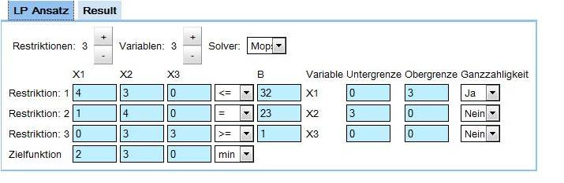

Universelle Solverschnittstelle
MightyMighty LP ist eine Webanwendung mit der LPAnsätze mit dem MOPS-Solver gelöst werden können.
Desweiteren besteht die Möglichkeit neue Solver über eine universelle Solverschnittstelle mit der Webanwendung zu verbinden.
Diese Webanwendung entstand durch ein Teamprojekt im Sommersemester 2010.
Dieses Schnittstelle ist leider nicht erreichbar.
© 2010 Fachhochschule Konstanz